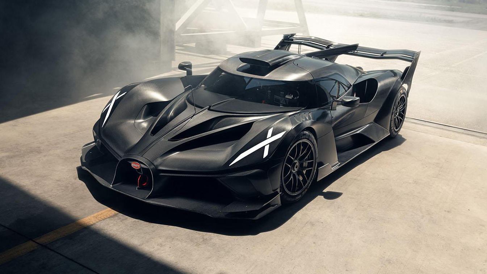

What
What Is Modern Bugatti Engineering?
Bugatti is my dream car! Modern Bugatti hypercars represent the peak of modern automotive engineering. From the 1,500 horsepower W16 engines in the Chiron series to the ground-breaking 1,800 horsepower naturally aspirated V16 hybrid system in the Tourbillon

Photo from www.bugatti.com not AI-generated.
Key highlights of the modern hypercar lineup:
- Bugatti Chiron Super Sport: Famous for breaking the 300 mph speed barrier with quad-turbocharged W16 power.
- Bugatti Tourbillon: Features a high-powered V16 engine and 3 electric motors that together deliver 1,800 horsepower.
- Bugatti Bolide: A track-only, ultra-lightweight hypercar engineered for maximum downforce.
- Bugatti Divo: A track-focused hypercar limited to 40 units, featuring an aggressive body design built to hold steady through fast corners.
- Bugatti W16 Mistral: The ultimate convertible built as the last street car with Bugatti's famous 1,600-horsepower W16 engine.
- Bugatti Centodieci: A super rare car limited to just 10 built, made as a modern tribute to the classic 1990s Bugatti EB110.
Who
Who Follows Modern Hypercars?
Ultra high networth buyers who can actually afford to purchase them, and a massive demographic of younger, automotive enthusiasts who follow them purely for the engineering, styling, and cultural status.

Photo from www.rightreg.co.uk not AI-generated.
The community surrounding these vehicles includes:
- Automotive Engineers: Designing cutting-edge carbon fiber monocoques and high-revving powertrains.
- Data & Software Analysts: Processing real-time telemetry data to optimize traction and cooling at extreme speeds.
- Design Enthusiasts: Appreciating the fusion of sculptural art and functional high-speed aerodynamics.
When
When To Witness Bugatti Events Live?
My favorite downtime hobby is whenever Bugatti drops a groundbreaking engineering press release. Bugatti models and brand showcases typically appear during the summer and spring event seasons.

Photo from www.topgear.com not an AI-generated image.
Key seasonal and historical timelines include:
- Spring/Summer: Major international auto shows and private high-speed track shakedown sessions.
- Autumn: Global showcase events like Pebble Beach where new custom built models are unveiled.
- Historical Legacy: Founded in 1909 by Ettore Bugatti, evolving into modern partnerships pushing the envelope of speed.
Where
Where Are Bugatti Hypercars Built And Tested?
First time I saw a Bugatti hypercar, it immediately reminded me of the Batmobile. Bugatti hypercars are hand-built at the Atelier in Molsheim, France, and high-speed tested on the track in Ehra-Lessien, Germany.

Photo from www.autotijd.be/en not AI-generated.
Primary locations significant to the brand include:
- Molsheim, France: Bugatti's historic home where every car is hand-built today
- Ehra-Lessien, Germany: The high-speed test track where Chiron and Veyron prototypes push past 300 mph.
- Global Concours: Exclusive car shows taking place in Geneva, Monterey, and Dubai.
How
How Bugatti Achieves Extreme Top Speeds?
Bugatti hypercars use four turbos and moving parts to push past wind resistance and it's exciting to see the car hit max speed.

Photo from www.motormatchup.com photo not AI-generated.
Engineering mechanisms that make this possible:
- Quad-Turbocharging / Hybrid Assist: Gives smooth, instant speed without any delay when you step on the gas.
- Active Aero Wings: Rear wings that dynamically tilt to act as airbrakes under heavy deceleration.
- High-Tech Lightweight Materials: Uses lots of lightweight carbon fiber, titanium, and strong aluminum to keep the car's weight down.
Why
Why Bugatti Amazes Everyone?
Bugatti builds powerful engines into moving artwork, proving that speed limits are made to be broken.

Photo from en.wheelz.me not an AI-generated image.
Main reasons this hobby never fades:
- Art Meets Science: Every mechanical piece is carefully crafted like artwork, including hidden components.
- Pushing Boundaries: Inspiring future engineers how to overcome major limits in materials and engine heat.
- Legacy: Honoring founder Ettore Bugatti's belief that every detail must be top quality.
AI Prompts
In accordance with assignmennt guidelines, AI was utilized as a study and coding assistant to help structure this single-page app layout.

Photo from www.caranddriver.com not an AI-generated photo.
- Help me plan a hobby website with seven sections (What, Who, When, Where, How, Why, AI Prompts) about my love for Bugatti sports cars. Make them relatable and straightforward.
- This website should not use Times New Roman. Use a color scheme of grey, navy blue, off-white and gold, with no default blue links as well as no plain white background.
- Generate a unique divider symbol (emoji or special character) for navigation links.
- Explain to me how to show an active section using HTML and JavaScript for a single-page application experience.